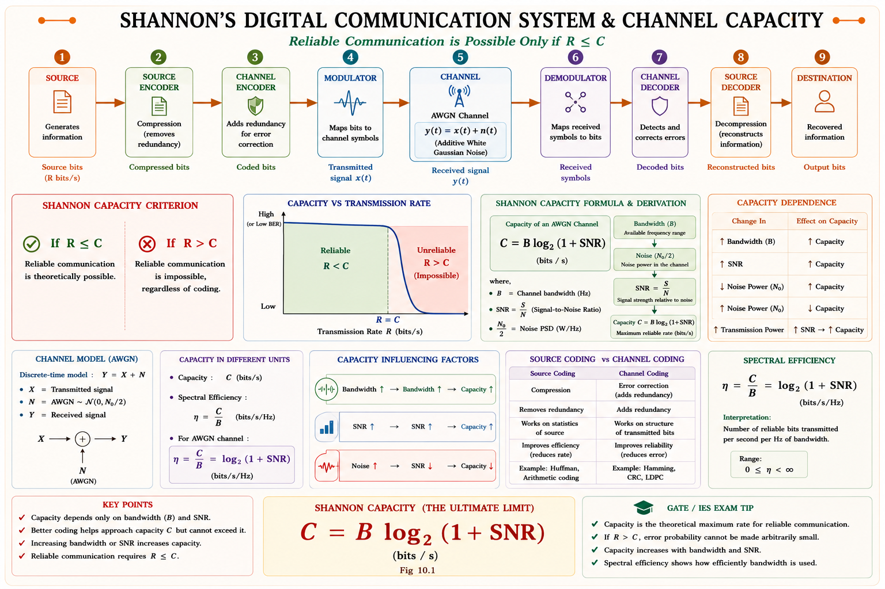
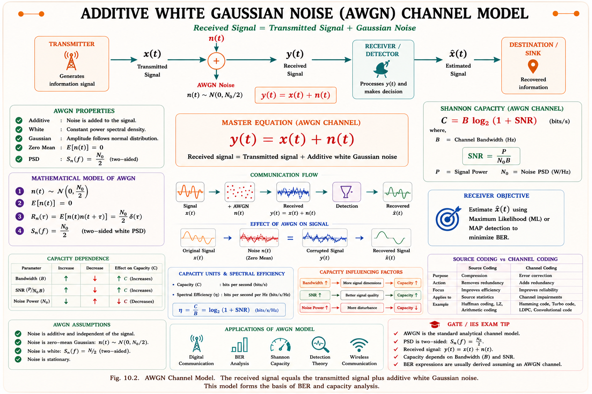
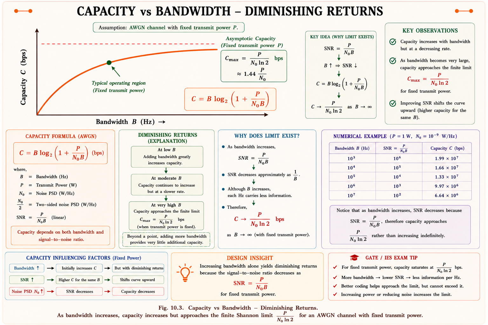

Shannon–Hartley capacity theorem, the AWGN channel model, bandwidth–SNR tradeoff, power-limited and bandwidth-limited regions, and the channel coding theorem — full GATE EC/EE and IES derivations with solved numericals.
Every communication link — a 4G phone call, a satellite downlink, a deep-space probe sending photos from Mars — faces the same fundamental question: how fast can I send data reliably over this channel? Every real channel has limited bandwidth and is corrupted by noise. Engineers needed a hard ceiling on data rate so that system designers know whether a target throughput is even theoretically possible, before spending years building modulators, coders, and antennas to chase it.
In 1948, Claude Shannon answered this with the channel capacity theorem: a precise formula for the maximum rate, in bits per second, at which information can be transmitted over a noisy channel with an arbitrarily small probability of error. This single result underpins the design of every modern digital system — Wi-Fi, 5G, DSL, deep-space links, and fibre optics all operate as percentages of their Shannon limit.
Capacity is not about a particular modulation scheme or coding method — it is a property of the channel itself (its bandwidth and noise). No clever engineering trick can push reliable throughput above this limit; the only freedom is choosing how close you get to it.

Before capacity can make sense, recall two quantities from information theory. Entropy H(X) measures the average information content (in bits/symbol) of a source, and information rate R measures how many of those bits are actually pushed through the channel per second.
Here \(r_s\) is the symbol rate (symbols/sec) and \(H(X)\) is the source entropy in bits/symbol. The channel capacity theorem asks: what is the largest value \(R\) can take while still allowing the receiver to recover the message with an error probability that can be pushed toward zero by using longer and cleverer codes?
Information rate R is what you are actually sending. Capacity C is the maximum R can ever be for a given channel. Shannon's theorem is silent on how to achieve rates near C — that is the job of channel coding (turbo, LDPC, polar codes).
The simplest and most widely used channel model in communication theory is the Additive White Gaussian Noise (AWGN) channel. The received signal is the transmitted signal plus an independent random noise term:
where \(x(t)\) is the transmitted signal, \(n(t)\) is noise, and \(y(t)\) is the received signal. The noise \(n(t)\) is called:
The noise power spectral density is written \(N_0/2\) (two-sided) so that the total noise power in a channel of bandwidth \(B\) is \(N = N_0 B\).

Students often confuse \(N_0\) (PSD, watts/Hz, two-sided value usually written \(N_0/2\)) with total noise power \(N = N_0 B\) (watts). Always check whether a problem gives \(N_0\) or total noise power before substituting into SNR.
For a continuous AWGN channel with bandwidth \(B\) Hz and average received signal power \(S\) watts in the presence of noise power \(N\) watts, the channel capacity is:
Here:
Think of the received signal as occupying a "volume" in signal space. Noise blurs every transmitted point into a small fuzzy sphere of radius proportional to \(\sqrt{N}\); the receiver can only tell two points apart if their spheres don't overlap. The total signal-plus-noise power defines a larger sphere of radius proportional to \(\sqrt{S+N}\). The number of distinguishable points that fit inside the big sphere — and hence the number of distinct messages per dimension — scales as the ratio of the two sphere volumes, raised to a power related to dimension (degrees of freedom). Working this through with \(2B\) degrees of freedom per second (Nyquist) gives exactly the \(B\log_2(1+S/N)\) result.
Doubling bandwidth gives you twice as many independent "slots" per second to pack bits into — capacity grows linearly with B. Doubling power only lets you pack logarithmically more distinguishable levels into each slot, because each extra bit needs the signal "sphere" to roughly double in radius, i.e. quadruple in power.
1) Channel is linear, time-invariant, and bandlimited to B Hz. 2) Noise is additive, white, and Gaussian (AWGN). 3) Average transmit power is constrained to S. 4) The result is an information-theoretic limit assuming ideal coding of arbitrary complexity and length — practical systems always operate below C.
The Shannon–Hartley formula shows that the same capacity C can be achieved by many different combinations of bandwidth and SNR — engineers can trade one for the other. This tradeoff is central to system design: satellite links are power-starved but spectrum-rich (use large B, low S/N), while cellular spectrum is scarce but power is more available (use small B, high S/N).

| Region | Condition | Behaviour | Typical Use Case |
|---|---|---|---|
| Bandwidth-limited | S/N ≫ 1, B small | C grows almost linearly with B | Cable/coax, fibre, cellular spectrum |
| Power-limited | S/N ≪ 1, B large | C grows almost linearly with S (logarithmic in B) | Deep-space, spread-spectrum, IoT |
Taking \(B \to \infty\) while holding average power \(S\) fixed (so \(N = N_0 B \to \infty\) too) gives a finite limiting capacity:
Beyond a certain bandwidth, throwing more spectrum at a fixed-power link gives essentially no extra capacity — this is exactly why spread-spectrum and ultra-wideband systems are power-efficient but never reach unbounded throughput.
Capacity is an upper bound, but several related "limits" appear throughout GATE/IES syllabi and practical design. Knowing how they connect avoids confusion.
Expressing capacity per bit rather than per second leads to the energy-per-bit form. If \(R\) is the actual transmission rate and \(E_b\) the energy used per bit, then \(S = E_b R\). Substituting and setting \(R = C\) (transmitting exactly at capacity) gives the famous bound:
This −1.6 dB figure is the absolute floor — no communication system, however cleverly coded, can achieve reliable communication with less energy per bit than this, in the infinite-bandwidth limit.
Before Shannon's full noisy-channel result, Hartley (1928) showed that for a noiseless channel with \(M\) discrete distinguishable levels:
Shannon's contribution was to replace the arbitrary \(M\) with a principled value derived from the actual noise power, giving \(M_{eff} = \sqrt{1+S/N}\) — connecting Hartley's discrete-level idea to a continuous noisy channel.
| Limit / Law | Formula | Applies To |
|---|---|---|
| Nyquist Rate | f_s ≥ 2B | Minimum sampling rate to avoid aliasing |
| Hartley's Law | C = 2B log₂M | Noiseless channel, M discrete levels |
| Shannon–Hartley | C = B log₂(1+S/N) | AWGN channel, continuous |
| Infinite-B Limit | C∞ = 1.44 S/N₀ | B→∞, fixed average power S |
| Eb/N0 Shannon Bound | Eb/N0 ≥ ln 2 (−1.6 dB) | Absolute energy-per-bit floor |
Many students write Hartley's law as \(C = B\log_2 M\) (missing the factor 2). Remember Hartley assumed \(2B\) independent samples per second (Nyquist), so the factor of 2 must appear unless the problem already defines symbol rate as \(2B\).
Shannon's full result (the noisy-channel coding theorem) is stronger than just defining a number C — it proves two complementary facts:
Shannon's original proof was non-constructive — it proved such codes exist using random coding arguments, but didn't show how to build them. It took nearly 50 years of coding theory (convolutional codes, turbo codes in 1993, LDPC codes, and polar codes in 2008) before practical codes approached within a fraction of a dB of the Shannon limit.
5G New Radio uses LDPC codes for data channels and polar codes for control channels — both chosen specifically because they operate within a small fraction of a dB of the Shannon limit at practical block lengths.
Given: \(B = 3000\) Hz, \(S/N = 1000\).
This matches the classic textbook result that a standard 3 kHz voice channel can carry roughly 30 kbps under good SNR — close to the practical limits achieved by voiceband modems.
Step 1 — convert dB to ratio: \(30\,\text{dB} \Rightarrow S/N = 10^{30/10} = 1000\).
Step 2 — set \(C = R = 10^6\) bps and solve for B:
So at least ≈100.3 kHz of bandwidth is needed at this SNR to theoretically sustain 1 Mbps — any practical system would need somewhat more due to coding overhead and implementation loss.
Original: \(C_0 = 10^6 \log_2(64) = 10^6\times 6 = 6\) Mbps.
(a) Double B: \(C_a = 2\times10^6\log_2(64) = 12\) Mbps — capacity doubles, exactly proportional to B.
(b) Double S (so S/N becomes 126, since N stays fixed): \(C_b = 10^6\log_2(127) \approx 6.99\) Mbps — capacity barely increases.
This confirms the core intuition: bandwidth gives linear capacity gains, power gives only logarithmic gains.
Solve: \(C = 4000\log_2(256) = 4000\times8 = 32{,}000\) bps = 32 kbps.
Watch for problems giving SNR in dB but expecting the ratio inside \(\log_2(1+S/N)\) — plugging the dB value directly is one of the most frequent numerical errors in this topic.
Type a doubt about Shannon capacity, AWGN, or bandwidth–SNR tradeoff, or tap a suggested question.
C = B log₂(1+S/N) bps. Linear in B, logarithmic in S/N. Valid for AWGN channel, average power constraint S.
y(t) = x(t) + n(t). Noise: Additive, White (flat PSD N₀/2), Gaussian amplitude. Total noise power N = N₀B.
Bandwidth-limited region: S/N≫1, C∝B. Power-limited region: S/N≪1, C∝S. Infinite-B limit C∞ = 1.44·S/N₀.
Hartley: C=2B log₂M (noiseless). Shannon bound: Eb/N0 ≥ ln2 ≈ −1.6 dB. Nyquist rate: fs ≥ 2B.
R<C → arbitrarily low error possible with suitable code. R>C → reliable transmission impossible. Proof non-constructive; LDPC/turbo/polar approach C in practice.
Always check SNR units (dB vs ratio). Convert kHz→Hz. log₂256=8, log₂1024=10 — common GATE-friendly numbers to recognise instantly.
All technical content is derived from the following standard textbooks and learning resources. All explanations, derivations, diagrams and examples are original to Aarova AI.